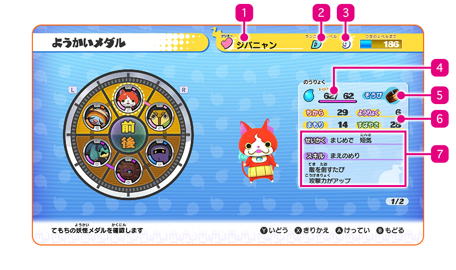
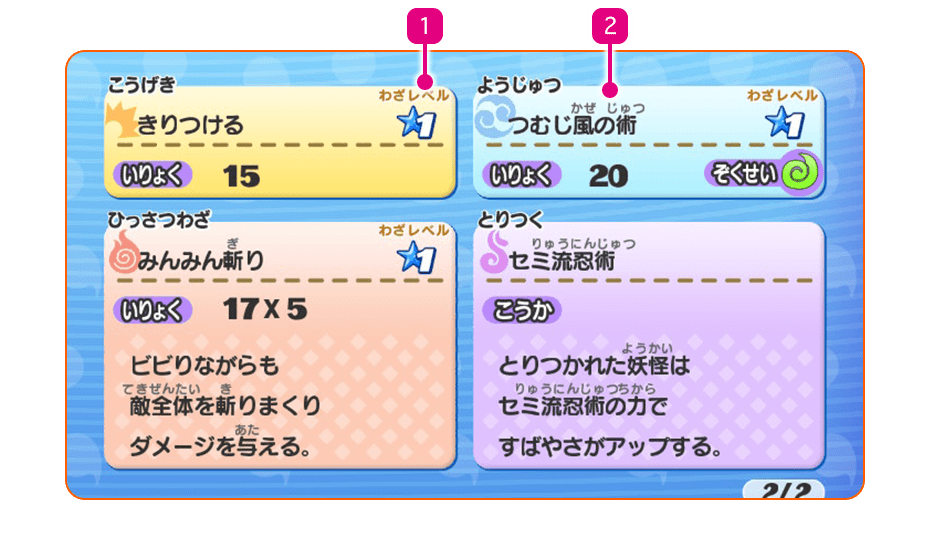

Estado de los Yo-kai
Puedes consultar el estado de tus amigos Yo-kai en el apartado Medallas del menú principal. Pulsa Ⓧ para cambiar la información que se muestra en pantalla.
Estado (1)

- 1Nombre y tribu
- Los Yo-kai pertenecen a una de estas ocho tribus:
| Valiente | Audaces e impasibles. |
|---|---|
| Misteriosa | Nunca sabes lo que están pensando. |
| Robusta | De mentalidad y cuerpo fuertes. |
| Guapa | ¡Solo querrás abrazarlos! |
| Amable | Afables y con un corazón de oro. |
| Oscura | Siempre están maquinando cosas... |
| Siniestra | Te harán estremecerte. |
| Escurridiza | ¡Escurridizos en todos los aspectos! |
- 2Rango Yo-kai
El rango de los Yo-kai va desde el E hasta el S . Cuanto mayor sea el rango, ¡mejor será el Yo-kai!
- 3Nivel y experiencia necesaria para alcanzar el siguiente nivel
- 4Animámetro y PV
Se muestra el nivel actual y el nivel máximo de PV.
- 5Objeto en uso
- 6Atributos
| FUE | Influye en la potencia del ataque. |
|---|---|
| DEF | Influye en la potencia de la defensa. |
| ESP | Influye en la eficacia de las técnicas. |
| VEL | Influye en el orden de los ataques. |
- 7Carácter y habilidad del Yo-kai
Estado (2)
Aquí verás información acerca del Yo-kai, como el animáximum y la técnica que puede usar en los combates.

- 1Nivel
Tus ataques subirán de nivel y se volverán más potentes a medida que los vayas usando.
- 2Elemento
- Si atacas con un movimiento del elemento contra el que tu enemigo sea vulnerable, le infligirás más daño.
| Fuego | Inflige daño con fuego abrasador. |
|---|---|
| Agua | Inflige daño con una intensa tromba de agua. |
| Relámpago | Inflige daño mediante rayos. |
| Tierra | Inflige daño a través de piedras y terremotos. |
| Hielo | Inflige daño con hielo glacial. |
| Viento | Inflige daño a través de la manipulación del viento. |
| Absorción | Utiliza un poder misterioso para absorber PV de un enemigo. |